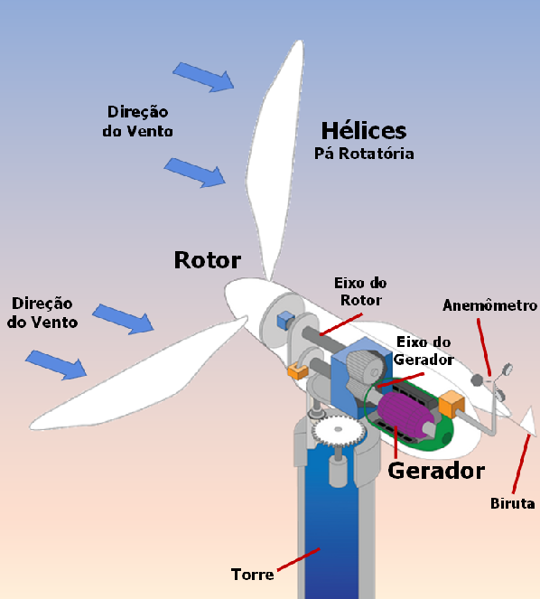

Representação dos componentes de um aerogerador.
Explicando alguns dos componentes:
Pás: elas servem para a captação do vento, a fim de converter sua potência ao centro do rotor. Geralmente são feitas de plástico e fibras de vidro.
Rotor: componente que fixa as pás e transmite o movimento de rotação para o eixo do rotor. Possui um sistema hidráulico que movimenta as pás em algumas posições, a fim de potencializar a força do vento ou parar a turbina.
Torre: componente que sustenta o rotor e a nacelle na altura ideal para o funcionamento. Feita de geralmente aço mas existem modelos com outros materias.
Nacelle: componente do alto da torre sendo o mais pesado do aerogerador, é composto pela caixa multiplicadora, sistema de yaw, sistema de controle eletrónico, sistemas hidráulico e chassis.
Caixa multiplicadora: transforma as rotações das pás para o eixo de baixa velocidade, para que assim entregue ao eixo de alto velocidade as rotações que o gerador necessita para o seu funcionamento (1500 rpm).
Gerador: transforma a energia mecânica do eixo em energia elétrica para ser armazenada em uma bateria, ou distribuída para a rede elétrica.
Anemómetro: meda a velocidade, direção e intensidade do vento. Assim o sistema de controle garante que a turbina esteja no posicionamento mais adequado.
Catavento: estima a direção do vento, transmitindo para o sistema de controle a posição instantânea do vento, para que o aerogerador oriente-se a posição do vento para potencializar a energia cinética advinda do vento, a fim de melhorar a potência produzida. A força do vento gira as pás, girando o rotor que propaga a rotação multiplicada pela caixa multiplicadora para o gerador, este transforma a energia mecânica obtida em energia elétrica. A energia elétrica produzida pode ser armazenada em baterias, caso for um sistema isolado que geralmente é utilizado em moradias e de menor escala, ou pode entregar a energia diretamente para a rede elétrica, em casos de sistemas integrados à rede que são de maior escala e para fins comerciais.